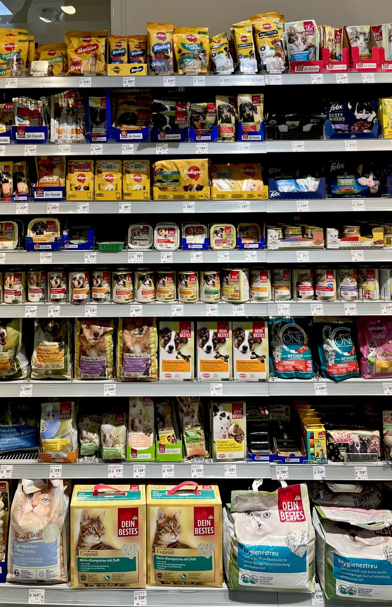

Servicios completos
Bienestar de confianza para tu mascota

Cuidado general y bienestar
Consultas clinicas, diagnostico, controles periodicos y prevencion con nuestro equipo de veterinarios.
Reservar turno →
Vacunacion y tratamientos
Cartilla de vacunacion al dia, tratamientos personalizados y seguimiento de la evolucion de tu mascota.
Reservar turno →
Farmacia y accesorios
Medicamentos, alimentos balanceados y accesorios recomendados por nuestros profesionales.
Ver mas →